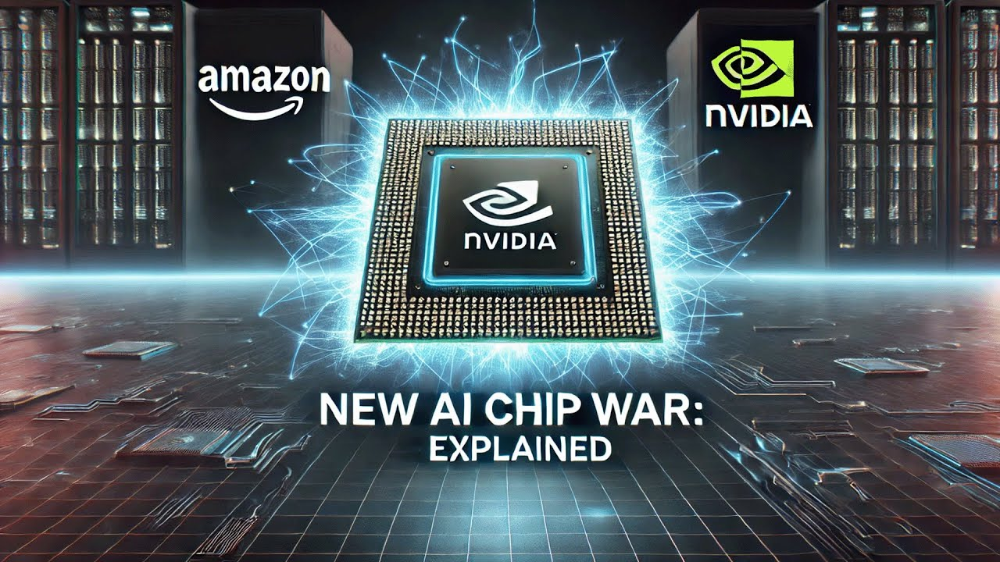

Amazon Unveils New AI Chip to Rival Nvidia
🌍 Introduction
Amazon has officially entered the high-stakes arena of custom silicon, unveiling a new proprietary AI chip. This strategic move directly challenges Nvidia, whose GPUs have long been the gold standard for training and deploying complex AI models.
🏆 Nvidia’s Market Dominance
For years, Nvidia has enjoyed near-total dominance in the AI hardware market. This dependency has become a strategic vulnerability for cloud giants like Amazon, Microsoft, and Google.
⚙️ Custom Silicon Strategy
Developing proprietary chips allows Amazon to control its hardware roadmap, optimize performance, and reduce operational costs. This independence marks a turning point in cloud infrastructure strategy.
💲 Performance & Cost Efficiency
Amazon claims its new chip offers a significant leap in performance-per-dollar compared to current-generation Nvidia GPUs. Specialized hardware can deliver efficiency gains that general-purpose GPUs cannot match.
🔗 AWS Integration
The true strategic genius lies in vertical integration with AWS. By controlling both hardware and cloud services, Amazon can achieve unmatched optimization and scalability.
📉 Democratizing AI
Amazon aims to lower costs and broaden access, effectively “democratizing AI.” This move could empower startups, researchers, and enterprises previously priced out of advanced AI hardware.
⚔️ Cloud Wars Intensify
This announcement escalates competition among Amazon, Microsoft, and Google. The battle for AI supremacy now extends beyond software and services into custom-designed silicon.
🌐 Ripple Effects
Developers and researchers gain new hardware options, potentially sparking innovation in frameworks, optimization techniques, and AI applications worldwide.
🌎 Geopolitical Dimension
In an era of semiconductor rivalry, Amazon’s chip signals technological sovereignty. US tech giants designing advanced chips strengthens their global influence in AI and cloud computing.
📊 Market Outlook
While Nvidia’s leadership remains strong, Amazon’s deep pockets, cloud dominance, and long-term vision pose a credible threat. Adoption by AWS customers will determine success.
✅ Conclusion
Amazon’s foray into custom AI chips is more than a product launch—it reshapes the AI landscape. This marks a new era of competition, innovation, and strategic independence in AI hardware.